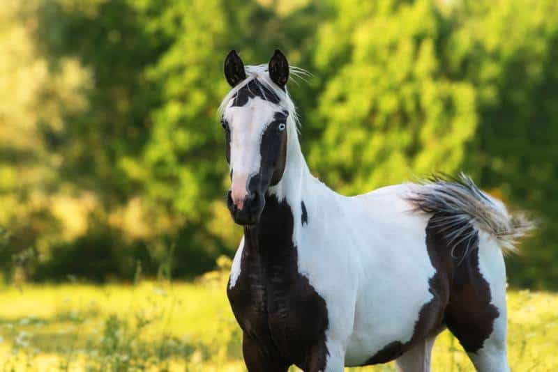

PAINT
Weight:
900 - 1,300 pounds.
Height :
56 in.
64 in.
Length:
56 to 68 inches .
Color:
Black, Bay, Chestnut, and Sorrel.
Longevity:
25 – 30 yrs.
Paint Personality
Paint horses are known for their striking coat patterns that include large patches of white combined with another color such as black, bay, chestnut, or palomino. They are versatile and intelligent horses, often used in various disciplines such as Western riding, ranch work, trail riding, and even in some English disciplines. Paints are typically known for their calm and friendly disposition, making them popular choices for riders of all levels, from beginners to experienced riders.
What to expect
Paint horses are known for their distinctive coat color patterns, typically combining white with another color such as black, bay, chestnut, or sorrel. They are versatile and popular in various disciplines, including western riding, pleasure riding, and ranch work. Paints are often known for their calm temperament, intelligence, and willingness to work, making them suitable for riders of different skill levels. They can excel in activities like trail riding, ranch work, reining, cutting, and even jumping, depending on their individual training and abilities. Overall, expect a versatile and eye-catching horse with a great temperament and the potential for success in a range of equestrian activities.
History of the Paint
The American Paint Horse has a rich history intertwined with the settling of the American West. Here’s a brief overview: 1.Origins: The Paint Horse has roots tracing back to the horses brought to the Americas by Spanish conquistadors in the 1500s. These horses carried the tobiano and overo color genes, which are distinctive in Paint Horses today. 2.Native American Influence: Native American tribes, particularly the Comanche, Navajo, and Kiowa, prized colorful horses and selectively bred them. This contributed to the prevalence of color patterns in early American horse herds. 3.Westward Expansion: As settlers moved westward in the 1800s, they brought their horses, including those with distinctive coat patterns. These horses were used for ranch work, transportation, and as war horses by Native American tribes.